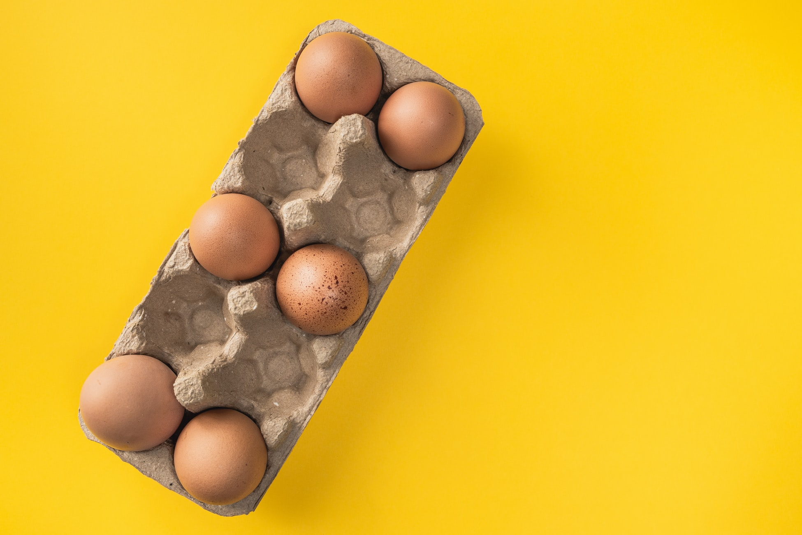
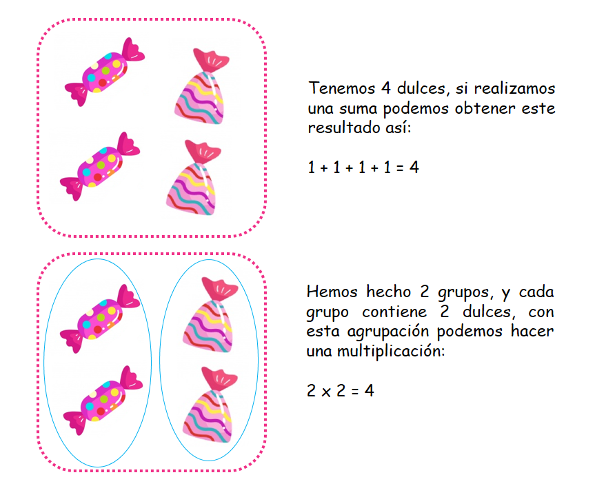
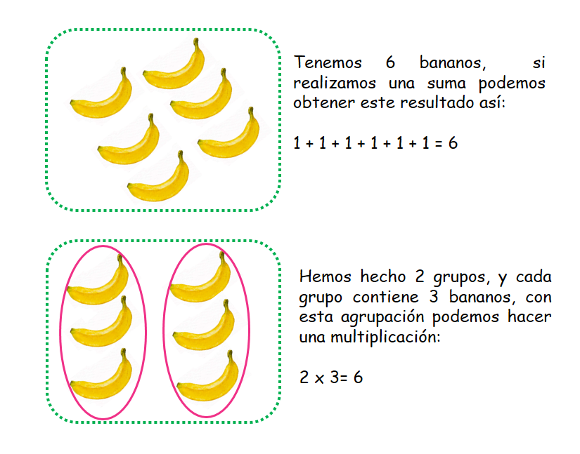
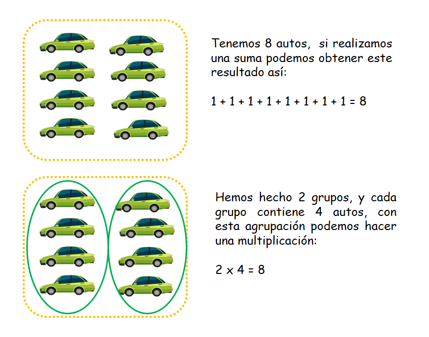
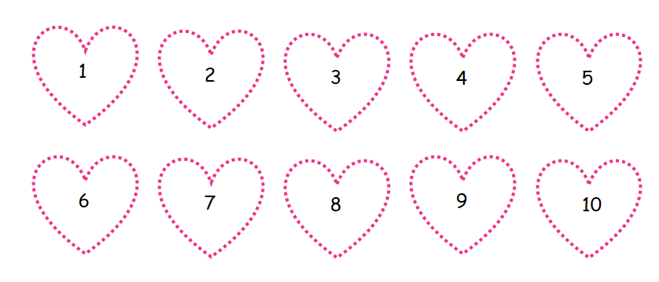
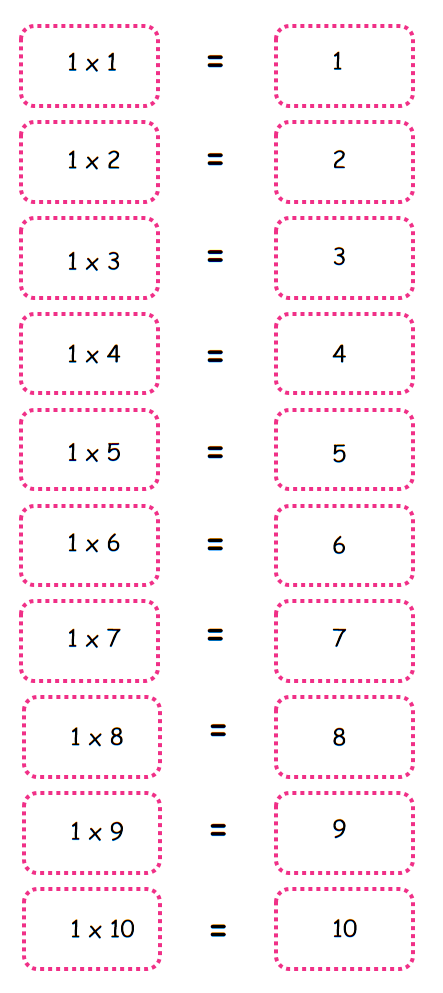
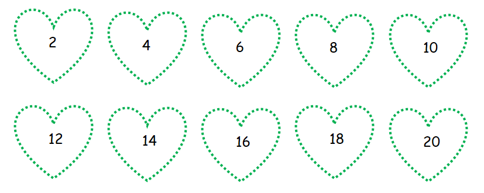
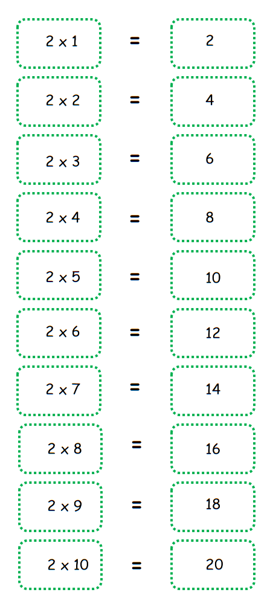
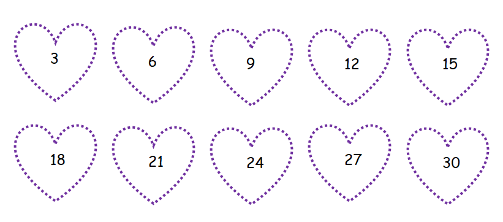
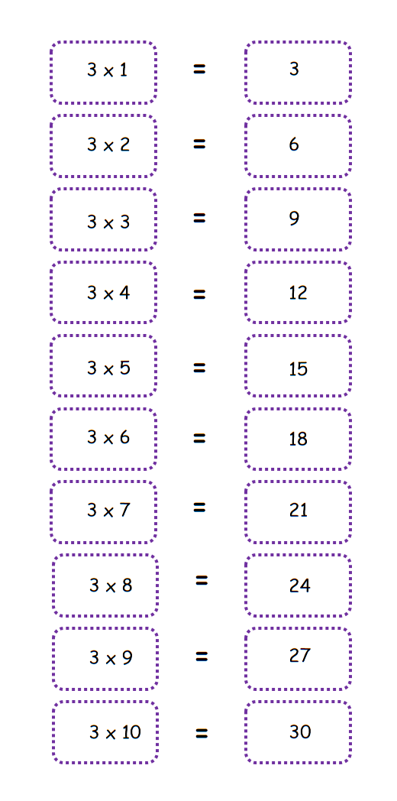

La multiplicación
Empezamos con la multiplicación.
¿Qué es la multiplicación y para qué nos sirve?
¿Alguna vez has visto este símbolo “X”?, ¿Te ha parecido curioso?, este es el símbolo de la multiplicación. Esta operación matemática nos permite hacer grandes sumas de una manera corta y rápida.
- ¿Qué vamos a aprender en esta primera parte?
- La relación entre la suma y la multiplicación.
- Las tablas de multiplicar del 1 al 3.
(1)La relación entre la suma y la multiplicación:
La multiplicación tiene una estrecha amistad con la suma, ¿has escuchado alguna vez que multiplicar es sumar? es cierto, para multiplicar lo que debemos saber primero es sumar.
Observa:
¡Fijate que obtuvimos los mismos resultados!
Como estas viendo cuando agrupamos elementos en conjuntos o grupos con la misma cantidad no tenemos que sumar unidad por unidad, podemos realizar una multiplicación para hallar el resultado, así las cosas, estarás multiplicando El número de grupos x el número de elementos que tiene cada grupo.
(2)Las tablas de multiplicar del 1 al 3:
Para usar la multiplicación de forma más sencilla y rápida podemos aprendernos las tablas de multiplicar. Estas tablas nos dan los resultados de diferentes multiplicaciones, sin que tengamos que sumar unidad por unidad.
Vamos a iniciar con la tabla del 1:
A. La tabla del 1:
Regla:
Todo número que multipliquemos por 1 nos va a dar el mismo número.
Tip: Para aprenderte los resultados de la tabla del 1 sólo tienes que contar de 1 en 1.
 B. La tabla del 2:
Tip: Para aprender más fácilmente los resultados de la tabla del 2, solo tienes que contar de 2 en 2.
 B. La tabla del 3:
Tip: Para aprender más fácilmente los resultados de la tabla del 3, puedes contar de 3 en 3.
 Material extra para trabajar el reloj:
Aquí podrás encontrar diferentes fichas para trabajar las tablas de multiplicar creadas por orientaciónandujar.es.
Aquí podrás descargar un cuadernillo de trabajo sobre las tablas de multiplicar creado por imageneseducativas.com.